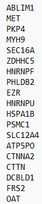
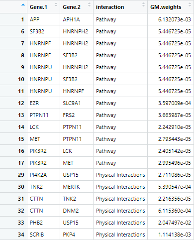

Analyzing Pathways from PTMs: A Guide
Nagashree Avabhrath, Mikhail Ukrainetz, Madison Moffett, Grant Smith, Lucia Williams, Mark Grimes
PTMsToPathways.Rmd
The PTMsToPathways package takes mass spectrometry data of post-translational modifications under different experimental conditions and implicates pathways that are involved. These pathways are generated based on analysis of which ptms cluster together (based on the similar reactiosn to the same environmental conditions) compared to how those proteins are known to interact. This clustering information is also used to find interactions between known, existing pathways.
An important note about this package: The returned outputs from the functions are data that may be saved in an RData object so that the user may reload the data, which may take a while to generate, and pick up where they left off later.
Starting Data
This package provides an example data set using 933 ptms and 8 experimental conditions in the correct format for entry. Below is an example selection of the input dataset:
dim(PTMsToPathways::ex_small_ptm_table)
PTMsToPathways::ex_small_ptm_table[38:50, 1:4]
#> [1] 908 18
#> H3122SEPTM_pTyr.C1 H3122SEPTM_pTyr.C2
#> HNRNPA3 p S358 NA NA
#> EPHB4 p S575 NA NA
#> BCAR1 p S407 163730 159600
#> MAGOH p S38; MAGOHB p S40 1824100 NA
#> DYNLL1 p S64; DYNLL2 p S64 NA NA
#> PRKCD p S304 NA NA
#> PCDH1 p S1018 NA 563220
#> AHNAK p S5832 NA NA
#> AHNAK p S5841 NA NA
#> ARHGEF5 p S1139 NA NA
#> SRSF9 p S178 NA NA
#> RIPK1 p S389 NA NA
#> URB2 p S18 NA NA
#> H3122SEPTM_pTyr.C3 H3122SEPTM_pTyr.D1
#> HNRNPA3 p S358 NA NA
#> EPHB4 p S575 NA NA
#> BCAR1 p S407 157500 104910
#> MAGOH p S38; MAGOHB p S40 NA NA
#> DYNLL1 p S64; DYNLL2 p S64 NA NA
#> PRKCD p S304 NA NA
#> PCDH1 p S1018 188940 NA
#> AHNAK p S5832 NA NA
#> AHNAK p S5841 NA NA
#> ARHGEF5 p S1139 NA NA
#> SRSF9 p S178 NA NA
#> RIPK1 p S389 NA NA
#> URB2 p S18 NA NAPipeline
The following pipeline is intended to be a step-by-step guide to walk users through the process of using the PTMsToPathways package. It includes descriptions of each function. This pipeline must be run in order as subsequent steps require the data produced in previous steps. Example code and example outputs as well as estimated run-times are included with each description and are based on a preliminary dataset of ~9,000 post-translational modifications and 69 experimental conditions processed with a 12th Gen i5 processor and 8GB of RAM.
Step 1: Make Cluster List
Make Cluster List is the first step in the analyzing one’s data. This function takes the post-translational modification table and runs it through three calculations of distance: Euclidean Distance, Spearman Dissimilarity (1 - |Spearman Correlation|), and the average of the two of these. These calculations find the ‘distance’ between ptms based upon under what conditions they occur. In other words, they found how dissimilar each pair of PTMs are. These matricies are then run through t-SNE in order to put them into a 3-dimensional space and the clusters that are present in each present in each matrix are identified as well. Please note: t-SNE involves an element of randomness due to pseudorandom initialization or stochastic processes within the algorithm; in order to get exactly the same results on multiple executions, set.seed(#) must be called (# = any integer of choice). A correlation table is also produced based on the Spearman Correlation values for each pair of PTMs.
Code
clusterlist.data <- MakeClusterList(ptmtable, keeplength = 2, toolong = 3.5)
common.clusters <- clusterlist.data[[1]]
adj.consensus <- clusterlist.data[[2]]
ptm.correlation.matrix <- clusterlist.data[[3]]
Figure 1 Example plot produced by MakeClusterList calculated using Euclidean Distance. The Euclidean Distance between every PTM is calculated and that information is put into a large matrix. This matrix is then condensed using t-SNE to get coordinates in two-dimensional space, which is what the above figure shows. These data points – and the PTMs they represent – are put into clusters based on these positions. This process is also undergone using Spearman Dissimilarity and the average of Euclidean Distance and Spearman Dissimilarity.

Figure 2 Output of MakeClusterList. Automatic print statements from the function ordiplot from the package vegan.

Figure 3 The second cluster created by Euclidean Distance. The left column is the name of the PTM in this cluster. The right column is the cluster number.

Figure 4 The second common cluster. All six of these post-translational modifications were clustered together whether distance was calculated by Spearman, Euclidean, or the average.

Figure 5 Coordinates of the t-SNE plot produced by Spearman Dissimilarity. Each row is a ptm, and each column is its positional location along the x, y, and z axes.
Step 2: Make Correlation Network
Next, Make Correlation Network is run to filter the correlation matrix of PTMs by specific PTMs that cluster together or have react similarly to the same conditions. It groups the PTM correlation matrix based on the Genes of PTMs. By summing these submatrices, it produces a gene by gene cocluster correlation network shows strength of relationships between proteins using the common clusters between the three distance metrics. The PTM version is also saved for analysis by the user.
Code
CCCN.data <- MakeCorrelationNetwork(adj.consensus, ptm.correlation.matrix)
ptm.cccn.g <- CCCN.data[[1]]
gene.cccn.g <- CCCN.data[[2]]
ptm.cccn.edges <- CCCN.data[[3]]
gene.cccn.edges <- CCCN.data[[4]]
Figure 6 First 17 rows and columns of the ptm.cccn produced by MakeCorrelationNetwork. PTMs that cluster together in all three distance metrics have entries that represent how strongly they correlate, or how alike their responses are under the same environment. PTMs that don’t cluster in all three distance metrics are correlated by an NA. Self-correlations are also marked by an NA to prevent self-similarity skewing.

Figure 7 First 17 rows and columns of the genes.cccn produced by MakeCorrelationNetwork. The ptm.cccn was condensed by combining all of the scores between PTMs corresponding to one gene. These new summed scores make up the scores of the genes.ccn. Self-correlations are marked by an NA to prevent self-similarity skewing.
Step 3: Retrieve Database Edgefiles
Description
The third step of the PTMsToPathways pipeline is broken up into several parts as there is a lot of choice for the user during each sub-step. PPI (protein-protein interaction) databases are consulted in order to filter the clusters by proteins that are known to interact with each other as well as how strongly they are known to interact. The standard recommended PPI database is STRINGdb; getting data from this database is the first (optional) step. This is accomplished with the function GetSTRINGdb. The function GetSTRINGdb requires the STRINGdb package to be downloaded. Code for this is supplied with the code to run the function itself. Please note, however, that the user may consult any database that they choose. After getting STRINGdb data (or not), the user runs MakeDBInput which produces a text file of all of their gene names. This information can be copy and pasted into any database that the user chooses in order to get data from other PPI networks. Step three is getting a GeneMANIA network, which is also optional but recommended. The user pastes their input data into GeneMANIA on the Cytoscape app and saves the edgefile and the nodetable. These files are then input into ProcessGMEdgefile in order to sort the data.
Note again that the database input can be used in any PPI database that the user chooses, though this package only explicitly supports STRINGdb and GeneMANIA. If another database is chosen, its file will have to be filtered manually by the user before moving on to step 4. The file should have four columns. Column one and two should strictly be labeled “source” and “target” in order to integrate with other PPI databases. Column three, “interaction”, should name the interaction type between the two proteins (these have different names in different PPI databases). The fourth column, “Weight”, should contain the edge weight from the PPI databases. .
Part 1 — Get STRINGdb Data
Code
if (!require("BiocManager", quietly = TRUE)) install.packages("BiocManager")
BiocManager::install("STRINGdb")
stringdb.edges <- GetSTRINGdb(gene.cccn)
Figure 8 First 18 rows of stringdb.edges produced by GetSTRINGdb. The first two columns represent the genes that are known to interact. The second column is the type of interaction. The GetSTRINGdb function limits the interaction types to database, database_transferred (database information from other species’ that are homologous to humans), experimental, and experimental_transferred (database information from other species’ that are homologous to humans). The final column is the score associated with this interaction.

Figure 9 First 18 rows of nodenames produced by GetSTRINGdb. Nodenames is a data frame consisting of every gene in gene.cccn. This represents all of the genes of the study (that cocluster).
Part 2 — Get File for Database Input
Code
MakeDBInput(gene.cccn, file.path.name = "db_nodes.txt")
Figure 10 First 15 lines from the produced text file named by file.path.name. Lists all of the gene names separated by newlines with no other extra characters for clean copy and pasting into a database input.
Part 3 — Process GeneMANIA File and read in Kinase Substrate Data from PhosphositePlus (https://www.phosphosite.org/staticDownloads)
Code
genemania.edges <- ProcessGMEdgefile(gm.edgefile.path, gm.nodetable.path, db_nodes.path)
kinsub.edges <- format.kinsub.table(kinasesubstrate.filename = "Kinase_Substrate_Dataset.txt")
Figure 11 The node table produced by the GeneMANIA query.

Figure 12 The edge table produced by the GeneMANIA query.

Figure 13 First 44 rows of the GeneMANIA network. The first two columns represent the genes that are known to interact. The second column is the type of interaction. The ProcessGmEdgefile function limits the interaction types to Pathway and Physical Interactions. The final column is the score associated with this interaction.
Step 4: Build PPI Network
The fourth step in the pipeline, BuildClusterFilteredNetwork, combines the data of protein-protein interactions from each of the provided databases. This package explicitly processes STRINGdb and GeneMANIA in Step 3, but the user may consult as many databases as desired (the processing for which is described in Step 3). BuildClusterFilteredNetwork combines these databases as efficiently as possible while retaining desired edgeweights from each database. BuildClusterFilteredNetwork also normalizes the weights on a scale of 0-1 and removes duplicate rows from the data frame. The Cluster Filtered Network, one of the final outputs of the package, checks all of the edges in the PPI network to ensure that both of the genes are within the cocluster correlation network created in step two and that its weight is nonzero. If either of these conditions are not met, then it will be removed from the list of PPI edges. This new, cluster filtered network is then returned. The combined PPIs are all the PPIs for all genes in the data. The cfn is about 12% of these filtered by PTM cluster data.
Code
network.list <- BuildClusterFilteredNetwork(stringdb.edges, genemania.edges, kinsub.edges, gene.cccn.edges, db.filepaths = c())
combined.PPIs <- network.list[[1]]
cfn <- network.list[[2]]
# To reduce clutter on graphs, the cfn edges can be merged:
cfn.merged <- mergeEdges(cfn)
Figure 14 First 19 rows of the ppi_network produced by find_ppi_edges. The first two columns represent the two genes that interact according to the consulted PPI databases. The third column is all of the interaction types concatenated together from each database. All subsequent columns (two, in the base case of just using STRINGdb and GeneMANIA), show the weights of the interaction from the associated database. These have been normalized to all be on a scale of 0-1.
Estimated run-time
1hr (only using STRINGdb and GeneMANIA)

Figure 15 First 19 rows of the cfn produced by ClusterFilteredNetwork. The first two columns represent the two genes that interact according to the consulted PPI databases. The third column is all of the interaction types concatenated together from each database. The final column is the sum of the weights from each inputted database.
Step 6: Pathway Crosstalk Network
Note: This step is directory sensitive. The user can check and set the working directory in R using getwd() and setwd(“yourdirectoryhere”) respectively. It needs a path to the bioplanet file and will put an edgelist file in the working directory or the otherwise given path. If the file cannot be found, please check the working directory first.
Step 6, our final analysis step, is the Pathway Crosstalk Network. This step requires input of an external database, bioplanet, that contains groups of genes (proteins) involved in various cellular processes known as pathways. PCN turns this database into a list of pathways and converts those pathways into a pathway x pathway edgelist (PCNedgelist) that possesses multiple weights, a jaccard similarity, and a score. The score is derived from Cluster-Pathway Evidence using the common clusters found in Make Correlation Network. Info about the Cluster-Pathway Evidence score can be found at: https://journals.plos.org/ploscompbiol/article?id=10.1371/journal.pcbi.1010690. For graphing in Cytoscape, the Cluster-Pathway Evidence and Jaccard similarity edges are listed separately in the edgelist called pathway.crosstalk.network.
Code
PCN.data <- PathwayCrosstalkNetwork(common.clusters, bioplanet.file = "bioplanet.csv", createfile = getwd())
pathway.crosstalk.network <- PCN.data[[1]]
PCNedgelist <- PCN.data[[2]]
pathways.list <- PCN.data[[3]]
Figure 16 The Pathway To Pathway Edgelist created by Pathway Crosstalk Network. This table shows the relationships between each pair of pathways represented in Bioplanet and the dataset as well as two different scores for the strength of the interaction.
Post-Processing Data
This is a completely optional step for users that want to visualize their data in different ways or interact with it in a desktop environment.
As an igraph Object
Most data structure outputs in this package are data frames or matrices with columns of nodes and column(s) of weights. You will need to view the data and manually set which two columns are the nodes and which column is the edges. The following code creates an igraph named graph.
df <- yourdatastructure
nodecolumns <- c(1, 2)
edgecolumn <- 3
graph <- igraph::graph_from_data_frame( df[,nodecolumns], directed = FALSE )
igraph::E(graph)$weight <- df[,3]Saving Data
If you want to save your data to a file, all data structures can either be exported with the save function and loaded later or saved to a csv file with the write.csv function.
save(object, filename = "filepath/name.rda") # Saves object as a .rda
load("filepath/name.rda") # Loads object saved to a file
# For multiple objects
save(object1, object2, object.ect, filename="NewFile.RData")
utils::write.csv(object, file = "filepath/name.csv") # Saves object as a .csv
utils::read.csv(file = "filepath/name.csv") # Loads object from .csvYou may also save your entire Global Environment namespace using the save.image function as shown below:
save.image(file = "filepath/name.RData")